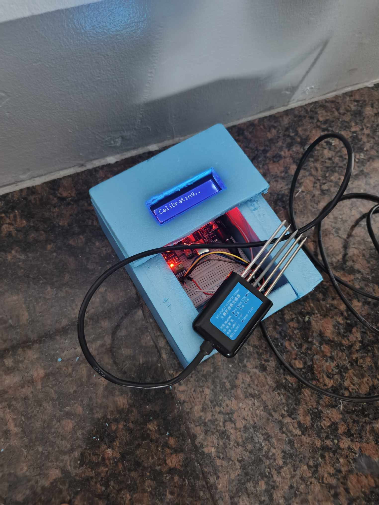
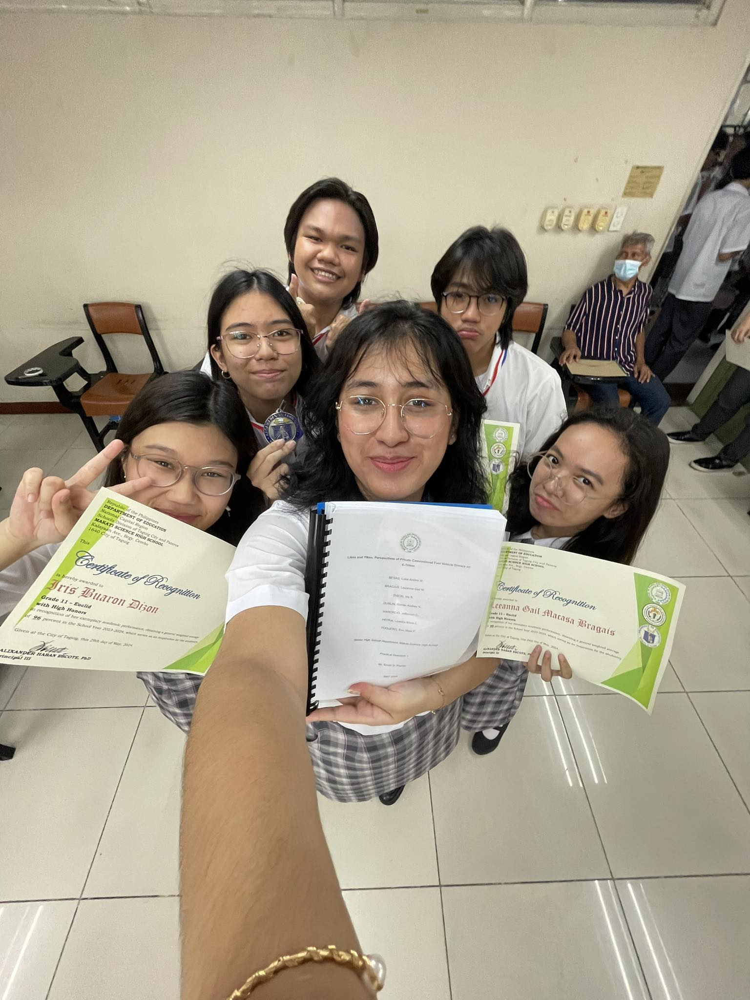

Likes and Yikes: Perspectives of Private Conventional Fuel Vehicle Drivers on E-Trikes
TOQUERO, E.M., BRAGAIS, L.G., DIZON, I.B., PATRIA, L.M., BESAS, L.A., DUBLIN, R.A
This study explores the perceptions of private conventional fuel vehicle (CFV) drivers in Metro Manila towards the growing number of e-trikes sharing the road. Face-to-face semi-structured interviews were conducted to understand driver perspectives on both e-trike vehicles and e-trike driver behaviors. The gathered findings revealed mixed views on e-trikes. While drivers appreciated their environmental benefits, concerns arose regarding the perceived lack of professionalism among some e-trike drivers. This led to reports of feeling a need for increased vigilance and adjustments in their own driving behavior to accommodate unpredictable maneuvers by e-trikes. This study also analyzed suggestions for improved e-trike regulations. Driver feedback emphasized a perceived gap in current regulations, particularly regarding measures to ensure safety and minimize inconvenience for road users. These findings suggest that existing regulations may be inadequate and highlight the need for government intervention to address the concerns and promote safer road environments.
Portable Soil Nutrient, pH, and Moisture Monitoring Device with the Application of Arduino Probe Sensors
BESAS, L.A., GENER, S.L., KAWAMURA, T., LUZANO, J., TABIAN, K.A.
Soil is an important, yet often ignored component of our natural systems. Plants heavily rely on soil as a source of essential nutrients such as Nitrogen, Phosphorus, and Potassium that may affect their health and growth. The manual techniques to monitor soil health discourage people to carry these out as they are challenging and prone to human error. In accordance with this, the researchers developed a Portable Soil Monitoring Device by utilizing Arduino-compatible Probe Sensors. The device is designed to gather data about the levels of pH, Nitrogen, Phosphorus, Potassium, and Moisture with utmost accuracy while having the ability to be carried anywhere. The said device was compared to its manual counterpart to evaluate the difference between the two techniques in terms of accuracy, time efficiency, and overall difference. After experimentation, the researchers utilized the Chi-square Goodness of Fit Test to evaluate the functionality test of the device, the Paired T-test for the accuracy and time-efficiency test of the manual and automated testing, and the Bland-Altman plot to further distinguish the similarities of the two measuring techniques. The results of the study are as follows: The device exhibited expected functionality, with data from both manual and automated testing being consistent and identical across all properties tested. The automated testing also provided faster readings while maintaining accuracy. With these results, the device proved to be a reliable and efficient tool for soil analysis.
